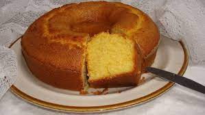

receita de bolo fuba:
ingredientes:
1 xicara e 1/2 (chá) de fubá mimoso
1 xicara (chá) de Farinha de Trigo Tradicional Renata
2 xícaras (chá) de açúcar
4 ovos
1 xicara (chá) de óleo
1 xicara (chá) de leite
1 colher (sopa) de fermento em pó
1 colher de sementes de erva-doce
1 pitada de sal
modo de preparo:
1:Coloque no liquidificador os ovos, o açúcar, o óleo, o leite e
2:Acrescente o fubá, a farinha de trigo e o fermento. Bata mais um pouco.
3:Misture com uma colher as sementes de erva-doce.
4:Coloque em uma forma untada com manteiga e farinha de trigo. Leve para assar em forno preaquecido a 180°C até dourar.
resultado:

a